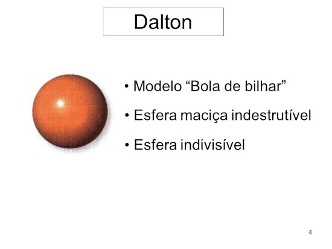
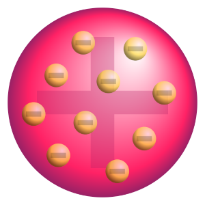
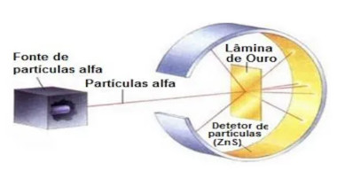
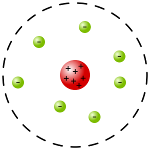
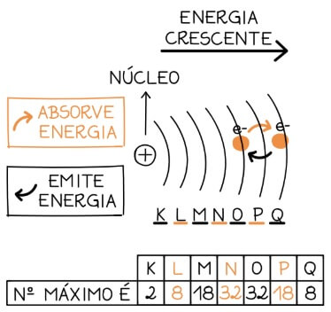
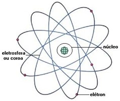

Demócrito e Leucipo foram os últimos pré-socráticos, sendo conhecido por terem fundado a ídeia de átomo.
Á = negação
Tomo = divisível
Logo, Átomo = indivisível
Em busca de uma teoria para o surgimento do universo, os pensadores formularam uma hipótese de tudo era constituído de átomos, que seria a menor coisa possível, tanto que nem o melhor dos olheiros os enxergaria, logo o átomo (indivisível) seria a menor partícula existente. Podendo assim ser o que formou todo o universo.
Não se sabe ao certo quem foram Demócrito e Leucipo. Alguns dizem que eles foram irmãos, outros dizem que na verdade era uma só pessoa que acrescentou outra só para dar mais vericidade à sua teoria.
Ainda acreditando que o átomo seria, como o próprio nome já diz, indivisível, John Dalton propôs o tão famoso primeiro modelo atômico, denominado de Bola de Bilhar.
Para lembrar do nome Bola de Bilhar lembre da bola da sinuca, tem o mesmo nome.
Teorizou a existência de raios catódicos, mais conhecidos como elétrons.
Agora Thomson, diferentemente dos teoristas anteriores, contrariava a principal regra de um átomo, ser indivisível. Thomson acreditava que o átomo era, na realidade, divisível.
Thomson se aproveitou da hipótese de Goldstein e também acresentou os raios catódicos (elétrons) ao seu modelo atômico, nomeado de Pudim de Passas
Thomson acreditava que o núcleo continha uma carga positiva e nele haviam distribuidos raios catódicos (elétrons) de cargas negativas.
Para se lembrar do nome Pudim de Passas pense no núcleo como sendo um pudim e nos raios catódicos (elétrons) como sendo uvas passas no meio do pudim. Pode parecer estranho mas tem gosto pra tudo até pra um Pudim de Uvas Passas
Provou, através de seu experimento, que o modelo de Thomson estava errado.
Em resumo, tal experimento o levou à ter de consertar o modelo atômico de Thomson, dando vida ao modelo atômico Sistema Planetário
Neste novo modelo atômico, diferentemente do anterior, os elétrons não ficavam no próprio núcleo, mas sim afastados, formando um tipo de eletrosfera.
O núcleo seria positivo, constituído por prótons, e muito parrudo, pesado, a parte mais pesada do átomo. Já os elétrons seria leves constituindo a eletrosfera.
Bohr já notou que não faria sentido que os prótons ocupados no núcleo ficassem tão juntos, pois assim então eles ficariam "se empurrando" por conta de suas energias, então teria que ter algo para balançar e impedir que os prótons de repelissem e para isso ele "usou" os nêutrons. Assim sendo o núcleo seria ocupado por prótons (de carga positiva) e nêutrons (de carga neutra)
Outras adição de um sistema para o outro é que a distribuição dos raios catódicos, vulgo elétrons, seriam feitas por camadas (níveis), sendo tais K, L, M, N, O, P e Q. Em que:
PS: O número indica quantos elétrons cabem em cada camada.
Note que cada elétron tem uma taxa de energia diferente.
Essas adições deram vida à um novo modelo mais conhecido como Modelo de Bohr
Um exemplo de mudanças de níveis seria justamente o efeito de fogos de artíficio.
Resumidamente, o elétron ao ganhar mais energia salta para uma camada mais exterior, porém por necesidade libera esta energia, assim dando sinais como as cores de fogos de artifícios e voltando à sua respectiva camada de origem.
As camadas começarem justamente na letra K do alfabeto se trata de uma homenagem feita ao tão famoso Kelvin
Sommerfield complementou ás ídeias de subníveis/subcamadas dos níveis/camadas anteriormente propostos por Bohr.
Seriam tais: s, p, d e f. No qual:
Tendo em mente que os números indicam quantos elétrons cabem em cada subnível.
